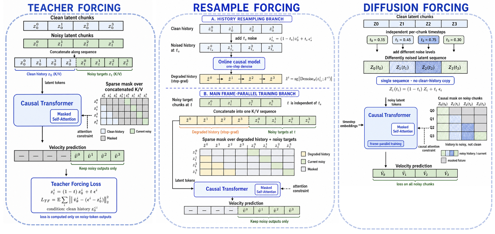
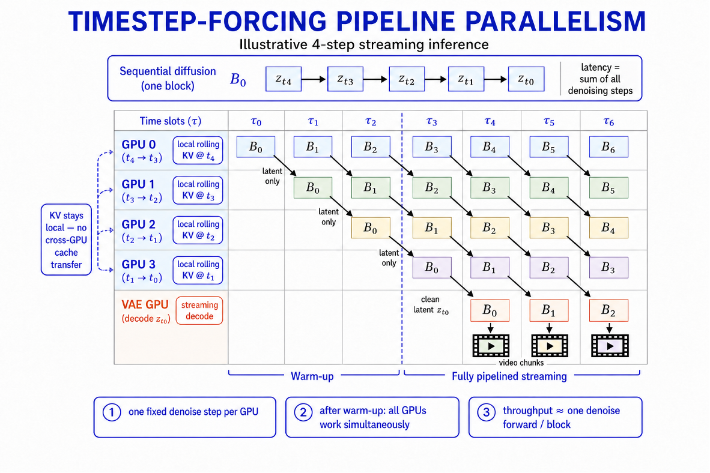

Block-causal LTX-2.3 · joint audio + video
Direct the stream
while it runs.
Stream LTX rebuilds a bidirectional LTX-2.3 into a block-causal model that emits one second of picture and sound at a time. Because it never looks ahead, you can hand it a new instruction between blocks — a gesture, a spoken line, a prop to pick up, rain, nightfall — and the next second carries it out.
- DiT throughput
- 43 fps
- Block
- 1 second
- Hardware
- 4 × H800
- Resolution
- 512 × 768
- Continuous
- 10 min
Generation runs faster than playback, so a take can be watched as it is produced. Audio and video come out of the same model, in the same block. The 43 fps figure is steady-state DiT denoising throughput only — text encoding, VAE and audio decoding and muxing are not counted in it, and first-block latency is a separate number.
Takes
Five runs, uncut
Every recording below is a screen capture of one continuous run — the console on the left, the live output on the right. Nothing is trimmed or re-timed. Pick a cue to jump to the second it lands.
Control
What one cue can change
A cue is a short piece of text. Across the five takes on this page, cues move the character's body, put words in their mouth, make them handle objects, and rewrite the weather and the light — all of it mid-stream, with the set and the character holding still.
Method
How it holds together
-
One-second audio-video blocks
Video and audio latents run at different rates — 3 fps and 25 fps — so a block is cut on a one-second boundary and carries both: 4 + 3k video frames beside 26 + 25k audio frames. All six attention paths, including the two cross-modal ones, carry a causal mask, so nothing inside a block can read the future.
-
Trained twice, the second time on its own output
Teacher forcing on real long video turns the bidirectional diffusion model causal. Resample forcing then rolls the model out without gradients and supervises the next block on the history the model actually produced, which is the distribution it will meet at inference. Both stages use a concatenated layout with one shared RoPE index and a sparse causal mask, so a single forward pass supervises N blocks.
-
A KV cache with a fixed budget
Long context is split into an anchor, a content memory, and a FIFO of recent blocks. Each layer scores its own keys on attention quality and temporal diversity and evicts down to a top-M budget, so a ten-minute take costs the same per block as the first minute.
-
Global and local prompts, separated
The global prompt holds the set, the character, and the style. The local prompt holds this shot's action and line. A block cross-attends only to its own local prompt, which is what makes a live swap safe: replace the instruction and the parts you did not touch stay where they were.
In the Mascot room take the operator edits the global prompt instead — adding lights off, the room is in darkness — and the room goes dark without the character resetting.
-
One denoising level per GPU
Inference is split by denoising level rather than by frame. Each GPU keeps one level's KV resident and passes latents to the next over NCCL P2P, so blocks flow through the levels as a pipeline. With few-step distillation and FlashAttention-3 this reaches 43 fps on 4 × H800 at 512 × 768 — DiT only, at steady state.


Notes
What this page is
The recordings
Screen captures of an internal research prototype, at the resolution and frame rate it actually ran. The first seconds of each take are the operator loading a first frame and starting the worker; the block strip begins where generation begins.
Cue timings
Timecodes are read off the console in the recording, so they mark when an instruction reached the model. The result lands a block or two later, which is what you see.
Availability
No code and no weights are released here. This page documents the work and shows what it does.
Credit
Built by Long Xiao during a research internship at Tencent, June–September 2026, on top of LTX-2.3.